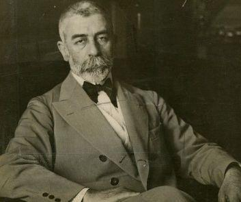
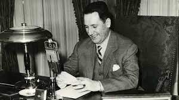

En pleno debate acerca de una posible reforma en materia laboral, te contamos algunos hitos de la historia del derecho del trabajo argentino. La legislación del trabajo hizo su irrupción en Argentina con medidas protectoras, como lo fue en casi todos los ordenamientos. La primera normativa laboral que se registra en Argentina es la Ley 4661 sancionada en 1905 -cuya autoría corresponde a Joaquín V. González -a partir de la cual se estableció el descanso dominical. Vale mencionar que, en una primera instancia, esta solo se aplicaba al territorio de la Ciudad de Buenos Aires (luego se fue replicando en el resto de las provincias). Fue considerada como la “primera ley obrera” y el puntapié para otras leyes laborales.
En 1907 se sancionó la Ley 5291, regulatoria del trabajo de mujeres y niños, la cual intentaba incorporar nuevas ideas sobre problemas sociales de la época, estableciendo, por ejemplo, la prohibición de la contratación de niños menores de 10 años. Alfredo Lorenzo Ramón Palacios En ese mismo año un decreto presidencial creó el Departamento Nacional del Trabajo –germen del actual Ministerio de Trabajo–, y se designó al frente de la flamante repartición a José Nicolás Matienzo. Tiempo después, en 1912, el Congreso sancionó la Ley Orgánica 8999 –basada en proyectos presentados por José Luis Cantilo y Alfredo Palacios–, que ampliaba las funciones de dicho Departamento. Argentina fue así uno de los primeros países en el mundo en tener una dependencia estatal especialmente dedicada a tratar y solucionar problemas inherentes a las relaciones laborales.
En materia de accidentes de trabajo y enfermedades profesionales, el año 1915 resulta importante pues entonces se sancionó la Ley 9688 que estuvo vigente –con distintas modificaciones– hasta el año 1991. Fue modelo y precursora en todo el continente americano. En ella se estableció la responsabilidad del empleador para casos determinados, así como una serie de compensaciones económicas en favor del trabajador. Finalmente, fue derogada y reemplazada por la Ley 24.028, que entre 1991 y 1995 funcionaría como “puente” entre ella y la actual Ley de Riesgos del Trabajo 24.557, de 1995.
En el año 1929 se sancionó la Ley 11.544, la cual reguló la duración de la jornada laboral y se encuentra vigente hasta hoy en día. En ella se estableció que las jornadas no pueden superar las 8 horas diarias o las 48 horas semanales. El criterio no es general y uniforme, ya que la norma también prevé el trabajo de mujeres o menores, trabajo nocturno o insalubre, donde las jornadas se reducen. En el año 1933 se sancionó la Ley 11.723, a través de la cual se introdujeron algunas de las medidas protectoras más importantes para los trabajadores. Indemnizaciones y vacaciones pagas fueron algunos de los derechos más importantes para el sector obrero, aunque en este momento solamente eran para trabajadores del sector comercial. Luego de numerosos reclamos del sector sindical, en el año 1945, y a través del Decreto 1740, el entonces Secretario de Trabajo y Previsión Juan Domingo Perón generalizó el derecho a gozar de vacaciones pagas a los trabajadores de todos los sectores.
